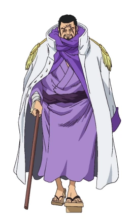
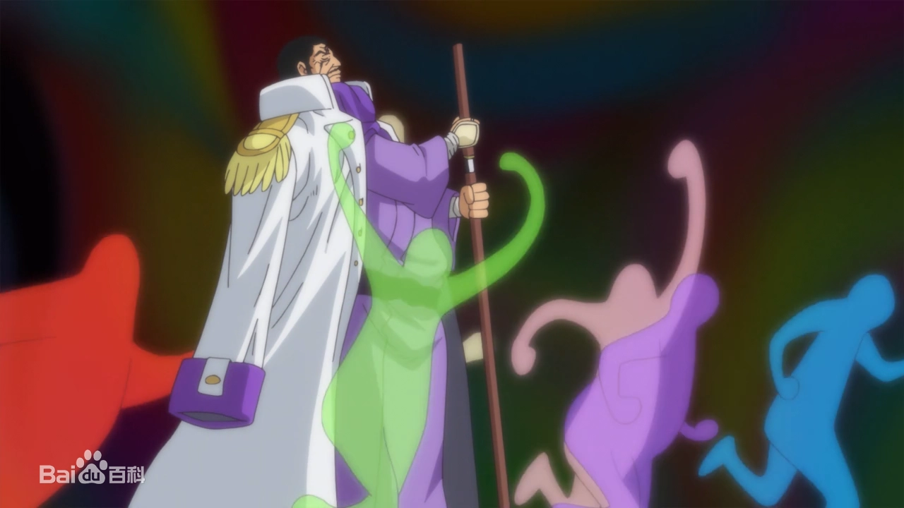
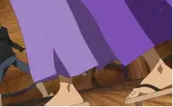

点击人名可依次查看人物介绍
| 赤犬 | 黄猿 | 青雉 | 藤虎 |
|  | 一生，漫画《航海王》及其衍生作品中的角色。海军代号“藤虎”，是“海军本部”最高战力“海军本部大将”之一。超人系“重重果实”能力者，性格温和耿直，有极其强烈的正义感，重视百姓安危，痛恨不义的作为。顶上战争后通过“世界征兵”大放异彩被破格提升为大将 |
||
果实：重重果实
招式1：重力刀·猛虎 将重力积蓄于刀上，将其挥砍出去，同时向挥刀的轨道释放出巨大的横向重力，将面前的事物全数压垮、破坏殆尽。即使物品没有被破坏也会被其重力产生出的巨大风压给击飞出去 |
 |
招式2：地狱旅 把周围地面的重力加强到极限，能把人压趴在地上动弹不得，刀鞘合上之时地面压出一个大洞。把人压进坑里 |
 |